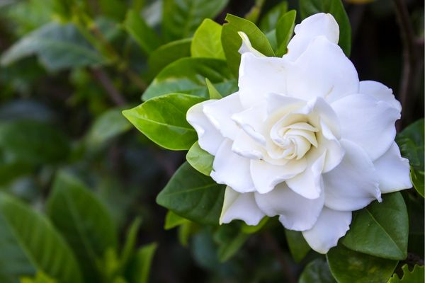
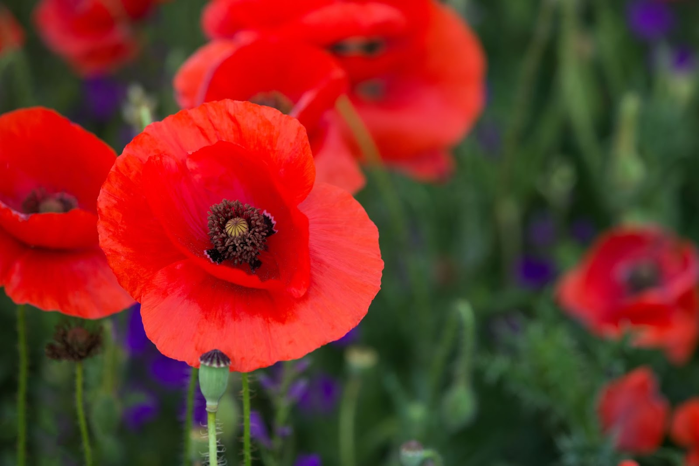
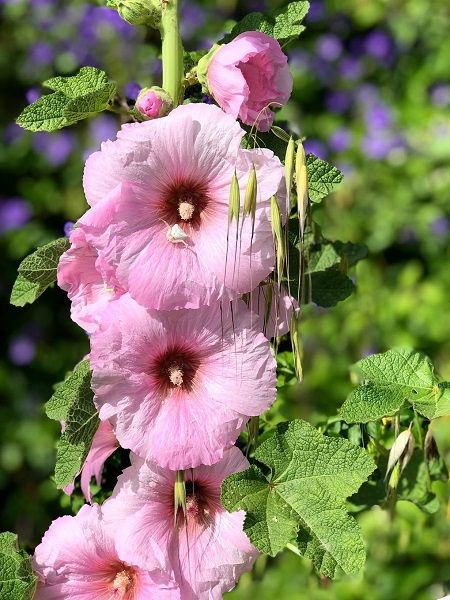
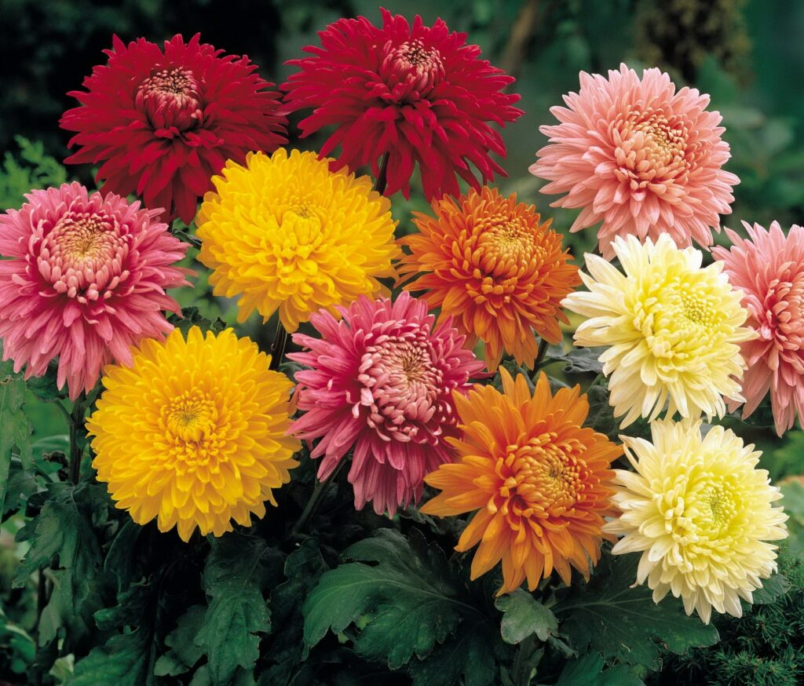
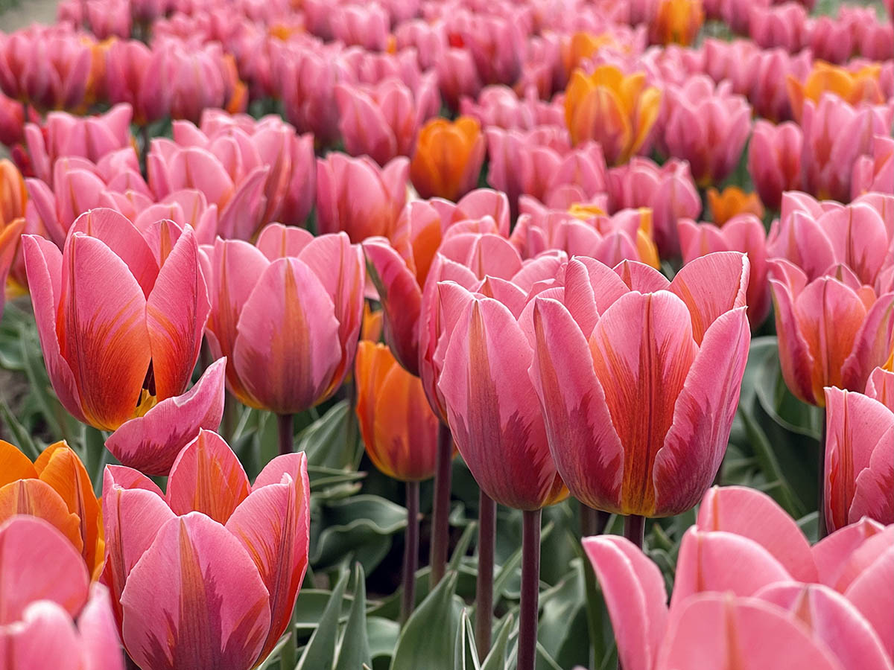

Gardenya Eski dünyanın tropikal ve yarı tropikal bölgelerinde yetişen ve kokulu beyaz çiçekler açan
ağaç türündendir.
ağaç türündendir.

Gelincik gelincikgiller familyasından Dünya'da çok geniş bir yayılma alanına sahip bir yıllık bitki türüdür.


bitkidir.2-2,5 metreye kadar boylanabilir.

Hatmi ebegümecigiller familyasına bağlı bir bitki türüdür. Hatmi çiçeği, latince adı Althaea
officinali olan ve tıbbi alanda yüzyıllardır kullanılan önemli bir bitkidir
officinali olan ve tıbbi alanda yüzyıllardır kullanılan önemli bir bitkidir

Diğer menekşe türleri ile birleştirilerek birçok melezin türetilmesinde yaygın
olarak kullanılır.

Kasımpatı ya da krizantem, yaklaşık 30 tür barındıran, papatyagiller familyasına bağlı
bir cinstir. Asya ve kuzeydoğu Avrupa'ya yerlidir.
bir cinstir. Asya ve kuzeydoğu Avrupa'ya yerlidir.

bulunan bitki cinsidir. Büyük bölümünün anayurdu Amerika'nın tropikal bölgeleridir. Kırmızı, mor, pembe, beyaz renkte çiçekler açarlar.

Lale, zambakgiller familyasından Tulipa cinsini oluşturan güzel çiçekleri ile süs bitkisi olarak yetiştirilen, soğanlı, çok yıllık otsu bitki türlerinin ortak adı


zambakgiller familyasının üyesi olarak kabul edilmekte iken şimdi yeni bir
familya olan Hyacinthaceae altında incelenmektedir.

bitki cinsidir.Özellikle bahçelerde yetiştirilen, kültive edilmiş formlarında birkaç renk birden görülebilir.

ve sonbahar mevsiminde çiçek açan gövdesi çalı, kökleri yumru şeklinde bitki türüdür.

ılıman ve subtropikal bölgelerde süs ve peyzaj bitkisi olarak yetiştirilen çalı veya küçük ağaçtır